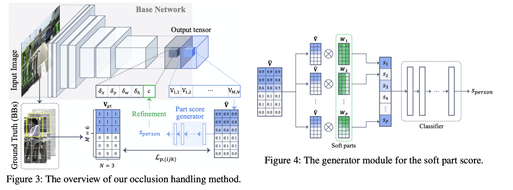

URL: http://openaccess.thecvf.com/content_cvpr_2018/papers/Noh_Improving_Occlusion_and_CVPR_2018_paper.pdf
一篇行人检测的论文，论文选择在single stage架构上做文章，主要解决两个问题，一个是遮挡问题，一个是FP问题，先说遮挡问题，遮挡问题论文提出来的整体解法和zhangshifeng的那篇Occlusion-aware RCNN论文做法算是很像的了，Occlusion-aware RCNN把行人整体分成了5个part，每个part会出一个score来对feature map做attention，这篇论文就是把行人平均分成M x N(论文中去M = 6， N = 3)个part来做和Occlusion-aware RCNN类似的事情，细节的话可以参考下面这张图：

首先模型会出基本的reg结果，这个没有什么特殊的，这个方案特殊就是特殊在这个”Occlusion-aware Score”, 对于每一个anchor模型会去学一个M x N的矩阵，代表每一个part的confidence，这个矩阵的gt生成也比较直接，如果某一个grid中的可见行人部分(这个解决可见框标注)面积 > t * area(grid)，论文中t取0.4，那么这个part的score就为1，否则就为0，因为对于每一个anchor我们只需要一个score，那么论文中也说出了两种从这个M x N矩阵中生成一个score的方法，1. argmax 2. 接几层网络以这个矩阵为输入去直接学这个score，后一个方法会考虑不同的遮挡pattern(w1….wp)会比第一个更灵活点（w也是学习的,维度也是MxN）.
论文另一个核心就是对FP的处理了，作者的出发点还是增强score的表现力，具体做法可以参考下面这张图，核心是这个”Grid Classifier”,对于网络中间的一些feature map比如是L1…Ln,假设对于第l个feature map，其大小为wl x hl x cl,那么通过一个1x1的conv就可以得到一个wl x hl的confidence map（至于这个confidence map如何监督也比较直接，gt就是把原来的输入图划分成wl x hl 大小，每一个小grid的gt值就是这个小grid于gt框的交面积与这个grid面积的比值），那么将这个confidence map插值到原来的输入图大小WxH，所有的1-L层feature map都做类似的事情，那么就会得到L个WxH大小的confidence map,取平均之后就可以得到最终的一个WxH的confidence map，那么对于某一个预测框，最终的score就是这个confidence map上对应预测框内部元素的均值，这个score和前面Occlusion-aware Score想乘就是最终的boundingbox的score。这一步主要是想通过多层的信息共同参与打分来增加模型的鲁棒性。

这篇论文给我的感觉就是很复杂，trick的地方很多，分 part算score的做法也有太多类似的论文。另外论文报的点似乎没有和sota比较，在部分数据集上的结果与sota相比还是差距比较大的